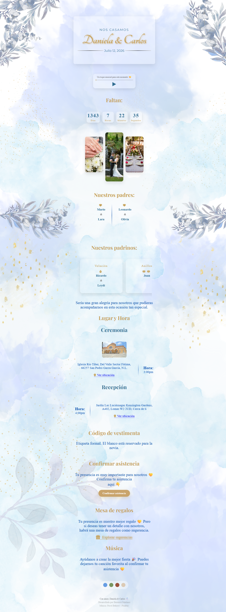

Invitación de boda
Desarrollo de una invitación digital interactiva con HTML, CSS y JavaScript. Incluye navegación por secciones, animaciones, reproductor de música, cuenta regresiva, confirmación de asistencia, integración con Google Maps y personalización del nombre de cada invitado mediante parámetros en la URL.
HTML5
CSS3
JavaScript